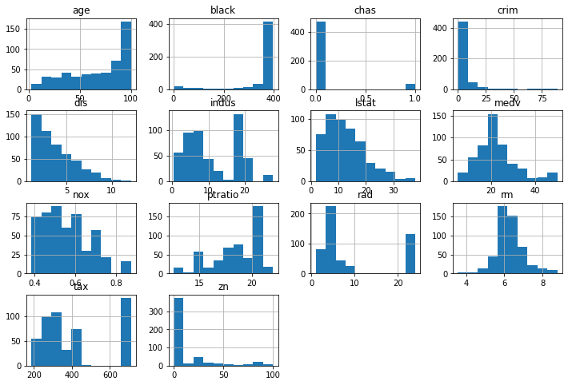
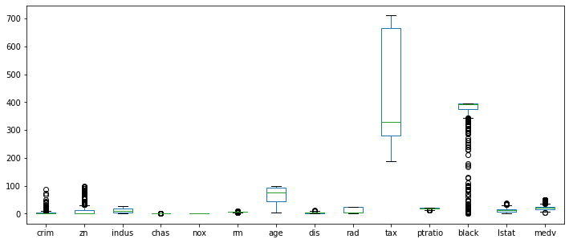
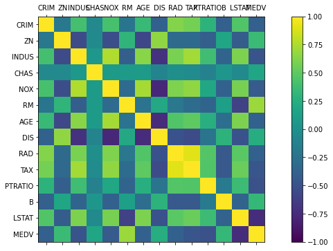
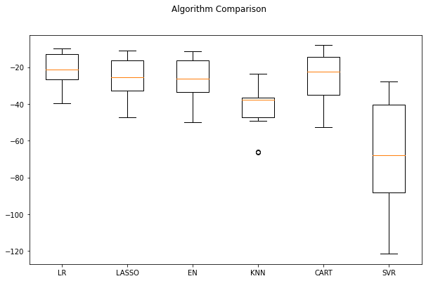

Thử sử dụng jupyter notebook để viết posts cho blog. Machine Learning Project Template với Python
1. Note lại các bước để viết posts cho blog sử dụng jupyter notebook
Bước 1: Tạo Jupyter notebook
# Tạo thư mục chứa post mới
mkdir -p <MY-WEBSITE-FOLDER>/content/post/<SHORT-POST-TITLE>/
# chuyển đến thư mục mới tạo
cd <MY-WEBSITE-FOLDER>/content/post/<SHORT-POST-TITLE>/
# Tạo một jupyter notebook với tên là index
jupyter lab index.ipynb
Bước 2: Tạo post metadata
Cần tạo metadata cho post ở cell đầu tiên của jupyter notebook như sau:
---
title: My post's title
date: 2019-09-01
# Put any other metadata here...
---
Bước 3: Convert notebook to Markdown
jupyter nbconvert index.ipynb --to markdown --NbConvertApp.output_files_dir=.
2. Machine Learning Project Template với Python
2.1 Một Machine Learning Project sẽ gồm các bước cơ bản sau:
Bước 1: Chuẩn bị vấn đề:
- Nạp các thư viện cần thiết
- Load tập dữ liệu
Bước 2: Thăm dò dữ liệu (data exploring)
- Thống kê mô tả
- Trực quan hóa dữ liệu
Bước 3. Chuẩn bị dữ liệu
- Làm sạch dữ liệu (data cleaning)
- Lựa chọn và biến đổi thuộc tính
- Chuẩn hóa dữ liệu
Bước 4. Đánh giá các algorithms
Bước 5. Impove accuracy
Bước 6. Final model
2.2 Thực hành với bài toán Regresion
Bước 1. Chuẩn bị vấn đề
# Nạp các thư viện cần thiết
import numpy as np
from numpy import arange
import matplotlib.pyplot as plt
from pandas import read_csv
from pandas import set_option
#from pandas.tools.plotting import scatter_matrix
from sklearn.preprocessing import StandardScaler
from sklearn.model_selection import train_test_split
from sklearn.model_selection import KFold
from sklearn.model_selection import cross_val_score
from sklearn.model_selection import GridSearchCV
from sklearn.linear_model import LinearRegression
from sklearn.linear_model import Lasso
from sklearn.linear_model import ElasticNet
from sklearn.tree import DecisionTreeRegressor
from sklearn.neighbors import KNeighborsRegressor
from sklearn.svm import SVR
from sklearn.pipeline import Pipeline
from sklearn.ensemble import RandomForestRegressor
from sklearn.ensemble import GradientBoostingRegressor
from sklearn.ensemble import ExtraTreesRegressor
from sklearn.ensemble import AdaBoostRegressor
from sklearn.metrics import mean_squared_error
# Load dữ liệu
url = 'https://raw.githubusercontent.com/svcuong/Datasets/master/boston.csv'
dataset = read_csv(url, index_col=0)
Bước 2. Thăm dò dữ liệu
Bước 2.1: Thống kê mô tả
# Kiểm tra kích thước dữ liệu
dataset.shape
(506, 14)
# Kiểm tra kiểu dữ liệu của thuộc tính
dataset.dtypes
crim float64
zn float64
indus float64
chas int64
nox float64
rm float64
age float64
dis float64
rad int64
tax int64
ptratio float64
black float64
lstat float64
medv float64
dtype: object
# hiển thị 10 hàng dữ liệu đầu tiên
print(dataset.head(10))
crim zn indus chas nox rm age dis rad tax \
1 0.00632 18.0 2.31 0 0.538 6.575 65.2 4.0900 1 296
2 0.02731 0.0 7.07 0 0.469 6.421 78.9 4.9671 2 242
3 0.02729 0.0 7.07 0 0.469 7.185 61.1 4.9671 2 242
4 0.03237 0.0 2.18 0 0.458 6.998 45.8 6.0622 3 222
5 0.06905 0.0 2.18 0 0.458 7.147 54.2 6.0622 3 222
6 0.02985 0.0 2.18 0 0.458 6.430 58.7 6.0622 3 222
7 0.08829 12.5 7.87 0 0.524 6.012 66.6 5.5605 5 311
8 0.14455 12.5 7.87 0 0.524 6.172 96.1 5.9505 5 311
9 0.21124 12.5 7.87 0 0.524 5.631 100.0 6.0821 5 311
10 0.17004 12.5 7.87 0 0.524 6.004 85.9 6.5921 5 311
ptratio black lstat medv
1 15.3 396.90 4.98 24.0
2 17.8 396.90 9.14 21.6
3 17.8 392.83 4.03 34.7
4 18.7 394.63 2.94 33.4
5 18.7 396.90 5.33 36.2
6 18.7 394.12 5.21 28.7
7 15.2 395.60 12.43 22.9
8 15.2 396.90 19.15 27.1
9 15.2 386.63 29.93 16.5
10 15.2 386.71 17.10 18.9
# kiểm tra phân bố dữ liệu của từng thuộc tính
print(dataset.describe())
crim zn indus chas nox rm \
count 506.000000 506.000000 506.000000 506.000000 506.000000 506.000000
mean 3.613524 11.363636 11.136779 0.069170 0.554695 6.284634
std 8.601545 23.322453 6.860353 0.253994 0.115878 0.702617
min 0.006320 0.000000 0.460000 0.000000 0.385000 3.561000
25% 0.082045 0.000000 5.190000 0.000000 0.449000 5.885500
50% 0.256510 0.000000 9.690000 0.000000 0.538000 6.208500
75% 3.677082 12.500000 18.100000 0.000000 0.624000 6.623500
max 88.976200 100.000000 27.740000 1.000000 0.871000 8.780000
age dis rad tax ptratio black \
count 506.000000 506.000000 506.000000 506.000000 506.000000 506.000000
mean 68.574901 3.795043 9.549407 408.237154 18.455534 356.674032
std 28.148861 2.105710 8.707259 168.537116 2.164946 91.294864
min 2.900000 1.129600 1.000000 187.000000 12.600000 0.320000
25% 45.025000 2.100175 4.000000 279.000000 17.400000 375.377500
50% 77.500000 3.207450 5.000000 330.000000 19.050000 391.440000
75% 94.075000 5.188425 24.000000 666.000000 20.200000 396.225000
max 100.000000 12.126500 24.000000 711.000000 22.000000 396.900000
lstat medv
count 506.000000 506.000000
mean 12.653063 22.532806
std 7.141062 9.197104
min 1.730000 5.000000
25% 6.950000 17.025000
50% 11.360000 21.200000
75% 16.955000 25.000000
max 37.970000 50.000000
# Kiểm tra độ tương quan giữa các biến dạng numeric
print(dataset.corr(method = 'pearson'))
crim zn indus chas nox rm age \
crim 1.000000 -0.200469 0.406583 -0.055892 0.420972 -0.219247 0.352734
zn -0.200469 1.000000 -0.533828 -0.042697 -0.516604 0.311991 -0.569537
indus 0.406583 -0.533828 1.000000 0.062938 0.763651 -0.391676 0.644779
chas -0.055892 -0.042697 0.062938 1.000000 0.091203 0.091251 0.086518
nox 0.420972 -0.516604 0.763651 0.091203 1.000000 -0.302188 0.731470
rm -0.219247 0.311991 -0.391676 0.091251 -0.302188 1.000000 -0.240265
age 0.352734 -0.569537 0.644779 0.086518 0.731470 -0.240265 1.000000
dis -0.379670 0.664408 -0.708027 -0.099176 -0.769230 0.205246 -0.747881
rad 0.625505 -0.311948 0.595129 -0.007368 0.611441 -0.209847 0.456022
tax 0.582764 -0.314563 0.720760 -0.035587 0.668023 -0.292048 0.506456
ptratio 0.289946 -0.391679 0.383248 -0.121515 0.188933 -0.355501 0.261515
black -0.385064 0.175520 -0.356977 0.048788 -0.380051 0.128069 -0.273534
lstat 0.455621 -0.412995 0.603800 -0.053929 0.590879 -0.613808 0.602339
medv -0.388305 0.360445 -0.483725 0.175260 -0.427321 0.695360 -0.376955
dis rad tax ptratio black lstat medv
crim -0.379670 0.625505 0.582764 0.289946 -0.385064 0.455621 -0.388305
zn 0.664408 -0.311948 -0.314563 -0.391679 0.175520 -0.412995 0.360445
indus -0.708027 0.595129 0.720760 0.383248 -0.356977 0.603800 -0.483725
chas -0.099176 -0.007368 -0.035587 -0.121515 0.048788 -0.053929 0.175260
nox -0.769230 0.611441 0.668023 0.188933 -0.380051 0.590879 -0.427321
rm 0.205246 -0.209847 -0.292048 -0.355501 0.128069 -0.613808 0.695360
age -0.747881 0.456022 0.506456 0.261515 -0.273534 0.602339 -0.376955
dis 1.000000 -0.494588 -0.534432 -0.232471 0.291512 -0.496996 0.249929
rad -0.494588 1.000000 0.910228 0.464741 -0.444413 0.488676 -0.381626
tax -0.534432 0.910228 1.000000 0.460853 -0.441808 0.543993 -0.468536
ptratio -0.232471 0.464741 0.460853 1.000000 -0.177383 0.374044 -0.507787
black 0.291512 -0.444413 -0.441808 -0.177383 1.000000 -0.366087 0.333461
lstat -0.496996 0.488676 0.543993 0.374044 -0.366087 1.000000 -0.737663
medv 0.249929 -0.381626 -0.468536 -0.507787 0.333461 -0.737663 1.000000
Bước 2.2: Trực quan hóa dữ liệu
# Histograms cho từng thuộc tính
dataset.hist(figsize=(12,8))
plt.show()

# Boxplot cho từng thuộc tính
dataset.plot(kind='box', figsize=(12,5))
plt.show()

# correlation matrix
fig = plt.figure(figsize=(14, 6))
ax = fig.add_subplot(111)
cax = ax.matshow(dataset.corr(), vmin=-1, vmax=1, interpolation='none')
fig.colorbar(cax)
ticks = numpy.arange(0,14,1)
ax.set_xticks(ticks)
ax.set_yticks(ticks)
ax.set_xticklabels(names)
ax.set_yticklabels(names)
plt.show()

Bước 3: Chuẩn bị dữ liệu
# Split-out validation dataset
array = dataset.values
X = array[:,0:13]
Y = array[:,13]
validation_size = 0.20
seed = 7
X_train, X_validation, Y_train, Y_validation = train_test_split(X, Y,
test_size=validation_size, random_state=seed)
Bước 4: Đánh giá algorithms
# Test options and evaluation metric
num_folds = 10
seed = 7
scoring = 'neg_mean_squared_error'
# Spot-Check Algorithms
models = []
models.append(('LR', LinearRegression()))
models.append(('LASSO', Lasso()))
models.append(('EN', ElasticNet()))
models.append(('KNN', KNeighborsRegressor()))
models.append(('CART', DecisionTreeRegressor()))
models.append(('SVR', SVR()))
import warnings
warnings.filterwarnings('ignore')
# evaluate each model in turn
results = []
names = []
for name, model in models:
kfold = KFold(n_splits=num_folds, random_state=seed)
cv_results = cross_val_score(model, X_train, Y_train, cv=kfold, scoring=scoring)
results.append(cv_results)
names.append(name)
msg = "%s: %f (%f)" % (name, cv_results.mean(), cv_results.std())
print(msg)
LR: -21.379856 (9.414264)
LASSO: -26.423561 (11.651110)
EN: -27.502259 (12.305022)
KNN: -41.896488 (13.901688)
CART: -26.016351 (15.164680)
SVR: -67.827886 (29.049138)
# Compare Algorithms
fig = pyplot.figure(figsize=(10, 6))
fig.suptitle('Algorithm Comparison')
ax = fig.add_subplot(111)
pyplot.boxplot(results)
ax.set_xticklabels(names)
pyplot.show()

Bước 5: Improve Results With Tuning
Tôi sẽ hướng dẫn ở một bài khác
Bước 6: Finalize model
Tôi sẽ hướng dẫn ở một bài khác
Cuong Sai
PhD student
My research interests include Industrial AI (Intelligent predictive maintenance), Machine and Deep learning, Time series forecasting, Intelligent machinery fault diagnosis, Prognostics and health management, Error metrics / forecast evaluation.